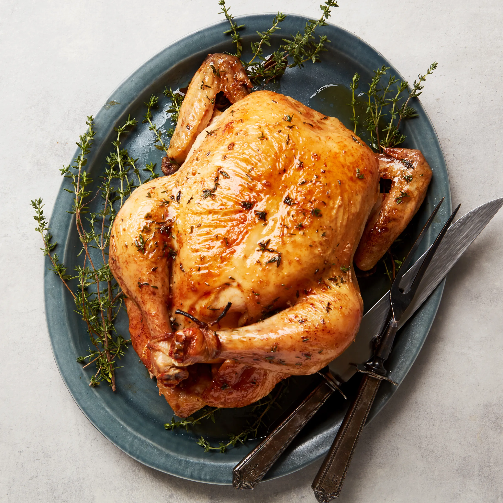

About Him
Tucker is a dog that sits between being very high energy and a low and more less energetic dog. Tucker has a good understanding of when and where he should act a certain way making him a great dog for people with low experience and a want for a dog that can adapt to certain situations

What he likes
Tucker likes to dress up in costumes and play with his brother. He loves chicken no matter the shape or size.

What he dislikes
Tucker hates broccoli, he cant stand it. He dislikes baths aswell but he always needs them as he stinks! You will never find him next to a cat, he thinks they are dumb and smell like poop.